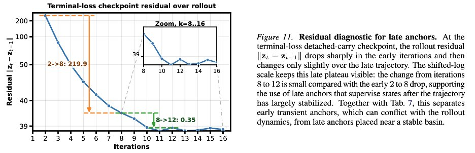
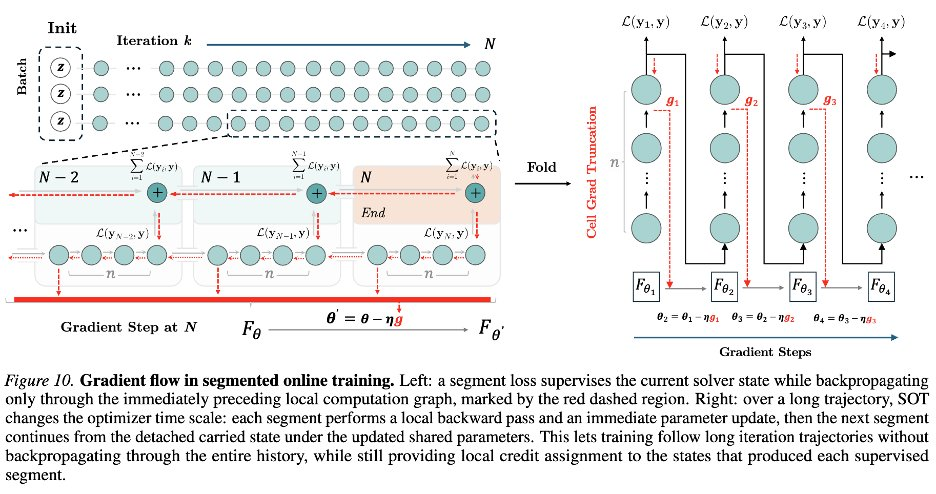
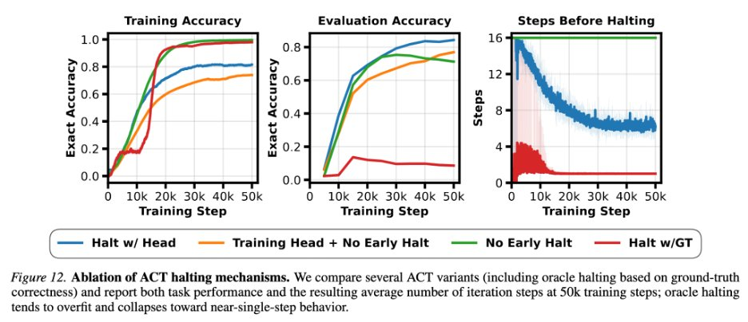
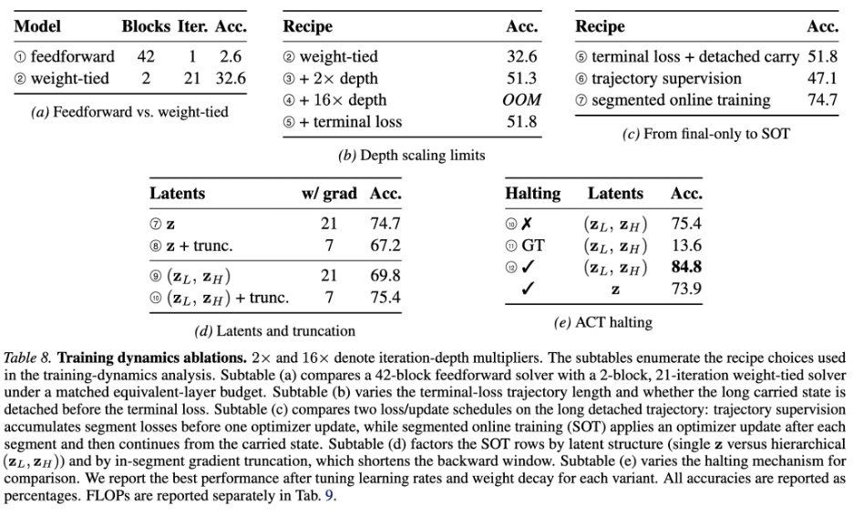
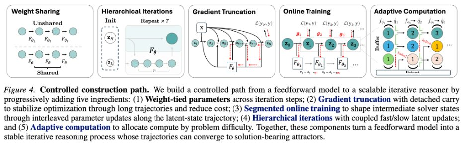

EqR 与 Neural Attractors：从 Feedforward 到 Iterative Reasoner
这条 X side-post 的核心不是“Sudoku 上又刷了一个分数”，而是在受控任务里拆解一个更基础的问题： 为什么同样的 layer-eval 预算，weight tying、online training、hierarchy 和 learned halting 会把一个几乎只会记忆的前馈模型，变成可以随 test-time compute 继续收敛的迭代推理器。
真正的问题：不是“多跑几层”，而是“多跑是否会向正确状态收敛”
一个前馈模型可以堆更多不同参数的层，一个 weight-tied 模型则反复应用同一个 update rule。两者在计算量上可能相近，但归纳偏置完全不同：前者像一次性函数逼近，后者像在 latent space 里运行一个求解器。
论文 Table 1 和 side-post 都显示，4/16/64-layer feedforward 在 Sudoku-Extreme 上只到 1.8/2.1/2.6%，Maze 为 0.0%。这说明单纯增加非共享层数没有学到可泛化的约束求解过程，更像在小训练集上记忆或拟合表面模式。
权重共享后，模型不再是 \(F_L \circ \cdots \circ F_1(x)\)，而更接近 \(z_{k+1}=f_\theta(z_k;x)\)。这个形式让“更多 test-time compute”有了明确对象：不是再发明新层，而是继续运行同一个 latent solver。
如果正确解附近没有稳定 basin，更多迭代不会创造正确性；如果错误解是低 residual attractor，更多迭代反而会更稳定地错。EqR 的核心就是让模型的内部 attractor landscape 与任务 metric landscape 对齐。
“低 residual”只表示 \(z\) 接近 \(f_\theta(z;x)\) 的固定点或低变化区域，不自动表示答案正确。只有在局部稳定、attractor 本身正确、输出 margin 足够时，residual 才能作为 correctness proxy。论文附录把这个条件写得很清楚，所以不能把 EqR 简化成“残差越小必然越对”。
Attractor 视角：EqR 到底在优化什么
论文把 iterative reasoner 写成输入条件化的 latent dynamical system。给定输入 \(x\)，模型维护 latent state \(z_k\)，每一步用同一个参数化算子更新：
如果推理过程真的学成了“求解器”，那么它应该把不同初始状态的轨迹推向某些稳定状态 \(z^\star\)。EqR 把这些稳定状态称作 task-conditioned neural attractors：
增加 depth \(D\) 等价于对同一个初始状态继续应用 update rule。它只有在轨迹已经进入有用 basin 后才可靠：此时更多迭代会降低 fixed-point residual，并让 decoded output 更接近正确解。
增加 breadth \(B\) 是从多个随机初始化或随机路径出发，覆盖更多 attractor basin。EqR 的主张不是 majority vote，而是选择最终几步平均 residual 最小的轨迹；这个选择只有在 residual 与 correctness 已经重新对齐时才有效。
如果一个 iterative model 的 residual 随 depth 降低，但 exact accuracy 不升反降，说明它可能只是更稳定地进入了 spurious attractor。此时问题不在“推理步数不够”，而在训练阶段没有塑造好 attractor landscape。
从 2.6% 到 84.8%：side-post 拆开的五个选择
用户给出的 side-post 最有价值的地方，是它没有只展示最终 EqR，而是拆解“loop model 如何先变得可训练、可泛化”。这条路径的每一步都对应一个具体的动力系统问题。
| 阶段 | Sudoku-Extreme exact acc. | 做了什么 | attractor 解释 |
|---|---|---|---|
| Feedforward | 2.6% | 64-layer 或 matched layer-eval 的一次性前馈预测器。 | 没有显式 latent solver 结构；增加层数主要增加拟合容量，不保证形成可重复收敛的状态转移。 |
| Weight tying | 32.6% | 把少量可训练 block 反复应用到 latent state。 | 引入可迭代的 update operator，模型开始具有“同一规则反复修正状态”的能力。 |
| Segmented online training | 74.7% | 长轨迹被切成 segment；模型沿轨迹前进时交替做 latent update 和 parameter update。 | 避免只在长 rollout 末端一次性回传，让学习信号跟随模型当前能到达的状态；相当于逐段把可达 basin 修正到更有用的位置。 |
| Hierarchy | 76.5% | 加入不同频率更新的高/低层 latent state。 | 不是独立魔法开关。论文附录显示 hierarchy 的收益强依赖 truncation 与 halting 训练方式，说明架构和优化动态耦合。 |
| ACT training | 84.8% | 加入 learned halting head，让模型学习什么时候停止或继续。 | learned halting 不只是省推理算力，也改变训练动态；外部 verifier/oracle halting 反而可能让模型走向捷径和记忆。 |


长轨迹全量反传既贵，也会让许多 recurrent Jacobian 串联，梯度条件数变差。更重要的是，轨迹上不同时间点的状态语义不同：早期状态还没进入 basin，晚期状态更接近候选 attractor，把它们同等监督会混合可靠与不可靠梯度。
side-post 中最反直觉的消融是 external verifier halting 只有 13.6%，learned ACT 到 84.8%。这说明“知道正确答案时停”给了模型一个外部捷径；模型没有学会内部收敛信号，只是依赖标签侧停止规则，泛化反而被破坏。

论文证据：EqR 如何把 scaling ceiling 推高
主论文在 side-post 的训练路径之外，进一步提出两个 landscape-shaping intervention：randomized state initialization 和 path stochasticity via noise injection。它们不是为了让模型更随机，而是为了让正确 attractor 更可达、更稳定、更适合 depth/breadth scaling。
训练时不再使用固定 latent 初始状态，而是采样 \(z_0\sim\mu_0(\cdot|x)\)。这扩大模型见过的初始状态区域，减少训练时单一路径与测试时多 restart 之间的 mismatch，并鼓励不同路径对同一任务收敛到一致输出。
每一步更新加入轻量随机扰动：
论文主实验使用轻微 damping 与小路径噪声，让轨迹不要过早卡进错误稳定点。
| 证据块 | 结果 | 应该如何理解 |
|---|---|---|
| Table 1: Feedforward vs iterative | Feedforward 最高 2.6% Sudoku / 0.0% Maze；EqR 99.8% / 93.0%。 | 硬约束任务上，泛化差异不是单纯参数量差异，而是是否存在可扩展的迭代状态转移结构。 |
| Table 3: Landscape shaping | baseline 84.8 / 44.9；RI 86.0 / 68.6；RI+NI 86.4 / 82.2。 | Maze-Unique 上 RI/NI 的收益尤其大，说明可达 basin 和 path stability 是关键瓶颈。 |
| Table 4: Test-time scaling | D=16,B=1: 86.4 / 82.2；D=64,B=1: 93.0 / 88.9；D=64,B=128: 99.8 / 93.0。 | depth 先让单轨迹更好收敛，breadth 再覆盖更多 basin；两者不是替代关系。 |
| Table 5: ACT efficiency | Sudoku-Lite 上 D=1024,B=1 从 1024 NFE 降到 58.7 NFE，accuracy 96.1 到 95.3。 | learned halting 能把大预算变成按样本难度分配的弹性预算，但会有小幅准确率折衷。 |
| Appendix A.3/A.4 | learnable initializer 未超过简单 RI；路径独立性 TRM 3.58/28.60 降到 RI+NI 0.13/1.33。 | KISS/YAGNI 上，简单随机初始化和固定噪声已经足够支撑主结论，没必要把机制过早复杂化。 |
Sudoku-Extreme 是 9x9 长程约束满足任务，论文复用 HRM 设置并有大验证集；Maze-Unique 是作者构造的 30x30 唯一路径 shortest-path 任务，训练/测试各 1000 个实例。指标是 exact accuracy：完整序列所有 token 都对才算 1。它不同于“局部 token accuracy”，也不同于 LLM benchmark 的自由文本评分。
边界和容易误读的地方
EqR 很有启发，但不能被过度外推。它给的是 controlled reasoning setting 下的机制证据，不是对所有 LLM 推理、所有递归模型、所有 benchmark 的通用证明。
论文附录明确：低 residual 只有在局部稳定、正确 attractor、正输出 margin 三个条件下才支持正确性。否则它只证明“收敛”，不证明“收敛到对的地方”。
Sudoku 和 Maze 的输入输出结构固定、答案可精确验证、任务 metric 明确。开放域 LLM 推理里的状态空间、目标函数和 verifier 都更脏，不能直接把 99.8% 外推成通用 reasoning scaling law。
论文使用 NLE/NFE accounting 表示 test-time compute 的放大。depth/breadth scaling 的收益要和延迟、吞吐、内存、batching 策略一起看；ACT 只是让预算分配更弹性，并没有让大规模迭代成本消失。
附录消融显示 hierarchy 的效果依赖 gradient truncation、SOT 和 ACT。把“加 hierarchy”从训练 recipe 中拆出来，很可能复现不到同样收益。
工程和研究启发
如果把 EqR 当成一个设计原则，而不是 Sudoku 技巧，它给循环/迭代模型训练提供了几条很实际的判断标准。
只看 accuracy 会把训练失败、收敛失败和错误 attractor 混在一起；只看 residual 会误把 spurious convergence 当成成功。二者一起看，才能判断 scaling 是否在走向正确 basin。
对长轨迹模型，早期状态可能只是过渡态。更合理的做法是识别模型已经接近有用 basin 的阶段，把强监督集中在可靠梯度上。
多 restart 不是天然有用；如果没有内部 convergence 信号，majority vote 可能只是放大偏差。EqR 的 convergence-based selection 依赖训练阶段先让 residual 变得有语义。

我的判断
EqR 最值得记住的不是“递归模型能在 Sudoku 上跑到 99.8%”，而是它把 test-time scaling 的一个隐藏前提显性化了：额外计算只有在模型内部有正确、可达、可选择的收敛结构时才是 reasoning；否则只是把同一个错误动力系统运行得更久。
这条 side-post 的价值在于揭示“迭代能力”不是 weight tying 自动带来的。Weight tying 只是给了模型一个可以反复应用的算子；SOT、监督位置、RI/NI 和 learned halting 才是在塑造这个算子产生什么 landscape。换句话说，loop model 的核心不是 loop，而是 loop 的相空间。
对更大的 LLM 或 agent 系统，最直接的迁移不是照搬 Sudoku 架构，而是引入类似诊断：内部状态是否随着额外计算稳定改善；停止信号是模型自己学到的还是外部 verifier 送来的捷径；多样本搜索是否有比 vote 更接近机制的 selection signal。只要这些问题答不上来，“test-time compute scaling”就仍然可能只是昂贵采样，而不是可解释的迭代推理。
术语解释与概念边界
- Equilibrium reasoning
- 把推理看成逐步收敛到稳定状态的过程，而不是一次前向传播直接给出答案。
- Neural attractor
- 系统动态中会吸引状态靠近的稳定区域。用于推理时，它对应模型反复修正后趋向的答案结构。
- Iterative reasoner
- 通过多轮内部更新改进表示的模型。它和普通 chain-of-thought 的区别是更新可发生在隐藏状态层面。
- 收敛失败
- 如果迭代进入错误吸引子，更多步数可能会让错误更稳定，而不一定带来更好答案。
证据边界与资料索引
本文把用户给出的 side-post 作为入口，但不只复述原帖。真正的技术上下文来自同一作者的 EqR 主帖、arXiv 论文、GitHub README、作者在回复中的澄清，以及 side-post 中的训练动态配图。
X 主帖 2058320088475037801 及 14 条相关记录给出从 feedforward 到 capable iterative model 的五段式构造：
feedforward 2.6%、weight-tying 32.6%、online training 74.7%、hierarchy 76.5%、adaptive compute 84.8%。
下载 arXiv 2605.21488v1 PDF，本地核验为 30 页。论文给出 EqR 的固定点视角、RI/NI 两个 landscape-shaping intervention、depth/breadth scaling、ACT 计算效率实验和附录中的训练动态消融。
读取 GitHub README：仓库用于复现 Sudoku-Extreme 和 Maze-Unique 实验，提供 Hugging Face 模型/数据、训练脚本、评估脚本、CUDA 依赖说明。报告只把 README 作为可复现性证据，不把未运行的训练结果当成本地复现实验。
主帖 2057641657580064941 解释 EqR 的完整叙事：weight tying 把网络变成 latent dynamical system，depth 是跑更长轨迹，breadth 是多次随机初始化并用 convergence-based selection 选低 residual 轨迹。bonus 回复中作者确认部分 ACT gain 来自训练动态，而不只是测试时 early halting。
